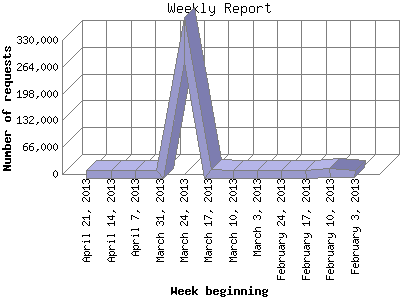

The Weekly Report identifies the activity for each week within the report
time frame. Remember that one page hit can result in several server requests
as the images for each page are loaded.
Note: Depending on the
report time frame for this report the first and last week may not represent
a full seven day week, resulting in lower hits.

| Week beginning | Number of requests | Number of page requests | |
|---|---|---|---|
| 1. | February 3, 2013 | 39 | 30 |
| 2. | February 10, 2013 | 1,970 | 1,459 |
| 3. | February 17, 2013 | 628 | 455 |
| 4. | February 24, 2013 | 688 | 234 |
| 5. | March 3, 2013 | 380 | 213 |
| 6. | March 10, 2013 | 228 | 144 |
| 7. | March 17, 2013 | 197 | 142 |
| 8. | March 24, 2013 | 329,298 | 329,229 |
| 9. | March 31, 2013 | 129 | 104 |
| 10. | April 7, 2013 | 135 | 116 |
| 11. | April 14, 2013 | 154 | 112 |
| 12. | April 21, 2013 | 473 | 292 |
Most active week beginning March 24, 2013 : 329,229 pages sent. 329,298 requests handled.
Weekly average: 27,710 pages sent. 27,859 requests handled.
This report was generated on April 26, 2013 14:34.
Report time frame February 7, 2013 05:19 to April 25, 2013 23:47.
| Web statistics report produced by: analog 6.0 / Report Magic 2.21 |